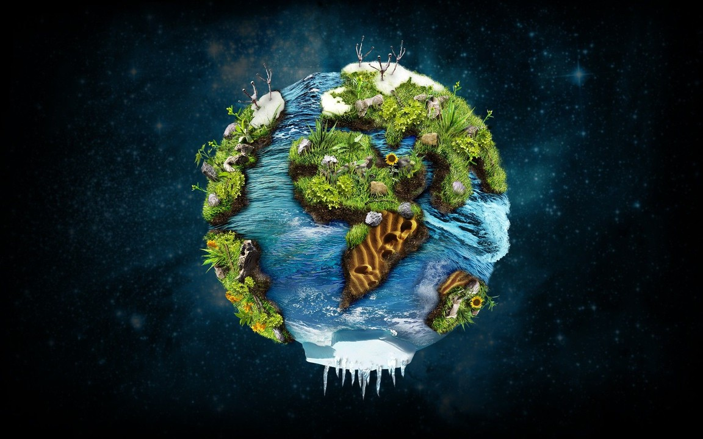
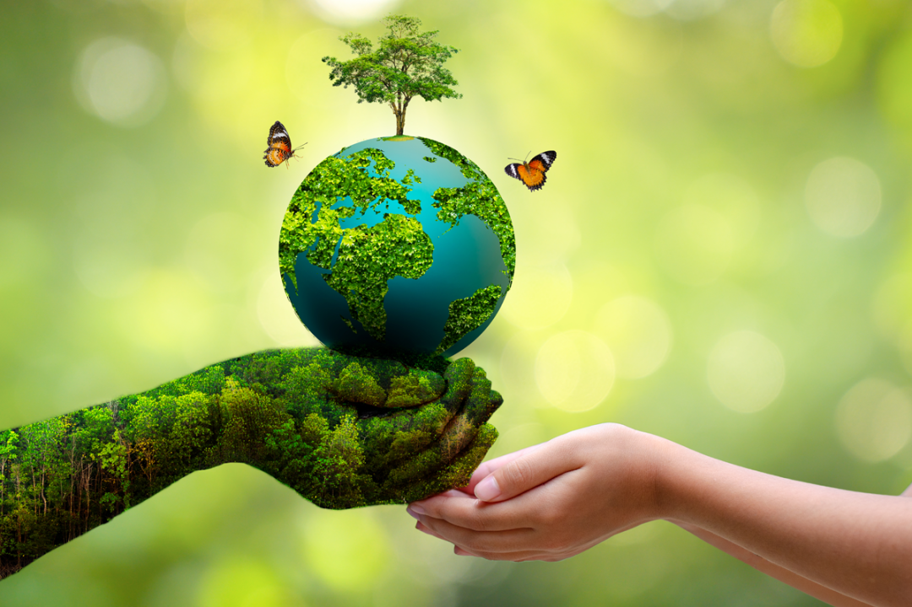
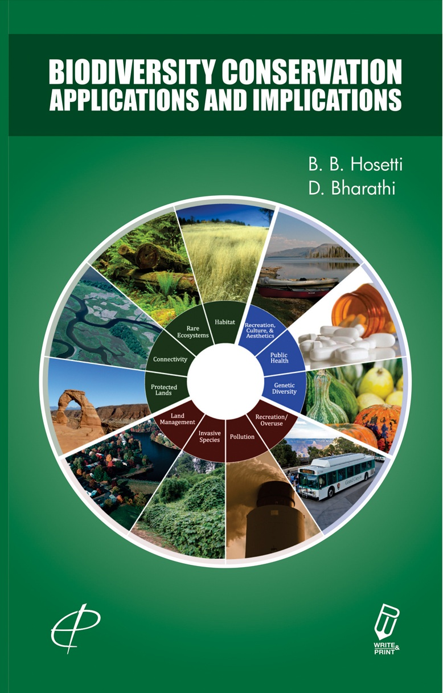
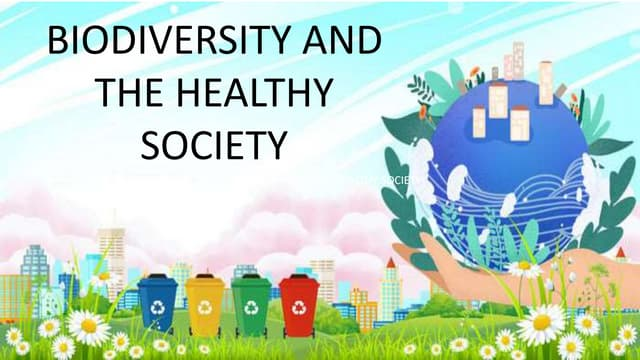
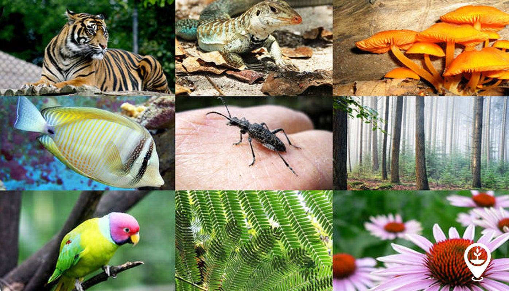

Biodiversity
Biodiversity
Introduction to Biodiversity

Biodiversity refers to the variety of life on Earth, encompassing the different species, ecosystems, and genetic variations that exist in the natural world. It includes all forms of life, from the tiniest microorganisms to the largest mammals, and every plant, animal, fungus, and bacterium in between.
This diversity is critical for maintaining the balance of ecosystems and ensuring the sustainability of our planet's resources. Each species plays a specific role within its ecosystem, contributing to functions like pollination, nutrient cycling, and climate regulation.
The more diverse an ecosystem, the more resilient it is to changes or disturbances, such as natural disasters, diseases, or climate shifts. Biodiversity is what allows ecosystems to recover from these challenges and continue to provide essential services to humans and other species.
Humans rely on biodiversity for numerous resources, including food, medicine, clean water, and raw materials. The variety of plant and animal species in different regions supports agricultural diversity and is a source of countless medicinal compounds.
In addition to its practical benefits, biodiversity has intrinsic value. It supports cultural traditions, inspires art and religion, and provides recreational opportunities like bird watching, hiking, and ecotourism, which have economic significance worldwide.
Despite its importance, biodiversity is under threat from human activities such as deforestation, pollution, habitat destruction, and climate change. These actions are leading to an unprecedented rate of species extinction, which could have serious implications for our future.
Conserving biodiversity is essential not only for protecting the natural world but also for ensuring the health, security, and well-being of human societies. Efforts to preserve this diversity range from local conservation projects to global initiatives aimed at protecting endangered species and habitats.
The loss of even a single species can have ripple effects throughout an ecosystem, affecting other species and the environment itself. This interconnectedness underscores the need for comprehensive conservation strategies that address multiple levels of biodiversity.
Biodiversity hotspots—areas that are rich in species diversity but threatened by human activities—are particularly important to protect. These regions are often home to unique species that cannot be found anywhere else in the world.
In conclusion, the importance of biodiversity cannot be overstated. It is the foundation of all life on Earth, driving ecosystem health, supporting human livelihoods, and providing cultural and economic benefits that enrich our lives.
ties, have a deep connection with biodiversity. Nature also offers recreational opportunities and mental well-being, as experiences in diverse ecosystems can reduce stress and promote health.
Importance of Biodiversity

Biodiversity is the foundation of life on Earth. It ensures natural sustainability for all living beings,
providing ecosystems that deliver essential services such as oxygen production, water purification,
pollination of plants, pest control, and climate regulation. The greater the diversity of life, the more
stable and resilient an ecosystem becomes.
This diversity helps in adapting to changes, surviving natural disasters, and maintaining ecological
processes. It also plays a crucial role in food security, as a variety of crops and livestock ensure a
stable food supply even when some species face threats.
Furthermore, many pharmaceutical drugs are derived from compounds found in plants, animals, and
microorganisms. Conserving biodiversity could lead to future discoveries of new medicines and treatments for
diseases. Biodiversity supports recreational and tourism activities, offering aesthetic and cultural value
to natural landscapes.
Maintaining high biodiversity levels also helps reduce greenhouse gases by capturing carbon dioxide from the
atmosphere, which is vital in combating climate change. This interconnectedness of species means that the
loss of one species can affect many others within an ecosystem.
1. Ecosystem Services
Biodiversity supports essential ecosystem services that humans depend on, such as:
Air and water purification: Plants and microorganisms help clean water and air by filtering pollutants.
Soil fertility: Diverse microorganisms and animals in the soil break down organic matter, maintaining its fertility for agriculture.
Pollination: Many plants, including crops, depend on animals like bees, birds, and bats for pollination.
Climate regulation: Forests and oceans act as carbon sinks, helping to regulate the global climate and mitigate the effects of climate change.
2. Food Security
Biodiversity ensures the availability of a wide variety of crops and livestock, providing resilience to pests, diseases, and changing environmental conditions. Monocultures (single-species crops) are more vulnerable to these threats, while diverse agricultural systems offer more security for food production.
3. Medicinal Resources
Many medicines are derived from plants, animals, and microbes. The natural world has historically been a source of remedies, and many life-saving drugs, such as antibiotics and anti-cancer agents, originate from biodiversity. The potential for discovering new medicines from unexplored species is immense.
4. Economic Value
Biodiversity contributes to economies through industries like agriculture, forestry, fisheries, and tourism. Sustainable management of biodiversity ensures long-term economic benefits. Ecotourism, in particular, relies on the preservation of natural habitats and wildlife.
5. Cultural and Recreational Significance
Many cultures, especially indigenous communities, have a deep connection with biodiversity. Nature also offers recreational opportunities and mental well-being, as experiences in diverse ecosystems can reduce stress and promote health.
6. Resilience to Environmental Changes
A diverse ecosystem is more resilient to changes and disruptions, such as climate change, natural disasters, or human-induced alterations. Species diversity enables ecosystems to adapt and recover from these changes, ensuring long-term survival.
7. Moral and Ethical Considerations
Many people believe that all species have an intrinsic right to exist, independent of their utility to humans. Preserving biodiversity is seen as a responsibility to future generations and to the other living organisms that share the planet.
Threats to Biodiversity

Human activities are the primary drivers of biodiversity loss. Habitat destruction due to urbanization,
deforestation, agriculture expansion, and industrial activities significantly reduces natural habitats for
numerous species.
Climate change has also become a major threat, leading to shifts in temperature and weather patterns that
disrupt ecosystems. Species that cannot adapt quickly enough to these changes face the risk of extinction.
Pollution from chemicals, plastics, and other waste harms wildlife and contaminates natural resources,
affecting both terrestrial and aquatic ecosystems. Overexploitation of resources through activities like
overfishing, poaching, and unsustainable hunting further strains species populations.
Invasive species introduced by human activities often outcompete native species for resources, leading to a
decline in biodiversity. Addressing these threats requires comprehensive strategies at global, national, and
local levels to protect and restore biodiversity.
1. Habitat Destruction and Fragmentation
Deforestation: Forests, which house about 80% of terrestrial biodiversity, are being destroyed to make way for agriculture, logging, and urban development.
Urbanization: Expanding cities and infrastructure disrupt natural habitats, making it difficult for species to survive and thrive.
Agricultural Expansion: Conversion of wild land into farmland reduces natural ecosystems and disrupts biodiversity.
Fragmentation: Roads, dams, and other infrastructure divide ecosystems, isolating species and limiting their ability to migrate or reproduce.
2. Climate Change
Temperature Shifts: As global temperatures rise, many species find it difficult to adapt to new environmental conditions, leading to migration, changes in reproductive cycles, or extinction.
Ocean Acidification: Increased carbon dioxide levels lead to more acidic oceans, which harm marine life, particularly coral reefs, shellfish, and plankton.
Extreme Weather Events: Droughts, floods, and storms are becoming more frequent and severe, putting additional pressure on ecosystems.
3. Pollution
Air Pollution: Emissions from industries and vehicles release harmful chemicals like sulfur dioxide and nitrogen oxides, which damage ecosystems, reduce air quality, and harm species.
Water Pollution: Chemicals, plastics, and sewage dumped into oceans, rivers, and lakes harm aquatic life. Oil spills, pesticides, and heavy metals can kill fish, plants, and microorganisms.
Soil Pollution: Industrial waste, pesticides, and chemical fertilizers reduce soil quality, killing beneficial organisms and reducing biodiversity in agricultural regions.
4. Overexploitation
Overfishing: Excessive fishing depletes fish populations and affects entire marine ecosystems. It also threatens species like sharks, whales, and dolphins that are often caught unintentionally (bycatch).
Hunting and Poaching: Illegal hunting of endangered species for fur, ivory, and other body parts can push species to extinction. Examples include tigers, elephants, and rhinos.
Logging and Mining: Unsustainable logging practices and mining operations can decimate forests and pollute surrounding ecosystems.
Conservation of Biodiversity

Conservation efforts aim to preserve natural habitats, protect endangered species, and restore ecosystems.
Establishing protected areas, like national parks and wildlife reserves, helps in safeguarding critical
habitats from human encroachment.
Restoration projects focus on reforestation, wetlands reconstruction, and soil improvement to revive damaged
ecosystems. Sustainable practices in agriculture, forestry, and fisheries play a crucial role in reducing
the impact on natural environments.
Conservation programs often involve local communities, ensuring that they benefit economically while
maintaining ecological balance. Education and awareness campaigns help people understand the value of
biodiversity and encourage proactive conservation efforts.
Technological advancements like remote sensing and genetic research provide innovative ways to monitor and
protect species, allowing for more targeted conservation strategies. Preserving biodiversity is essential
for the well-being of future generations and the health of our planet.
1. In-Situ Conservation
In-situ conservation refers to the protection of species in their natural habitats. This is the most effective way to maintain species diversity, ecological processes, and genetic resources.
Protected Areas: National parks, wildlife sanctuaries, and nature reserves are established to protect ecosystems and wildlife from human interference. These areas are crucial for maintaining species in their natural environments.
Biosphere Reserves: These are large areas that aim to balance conservation, sustainable resource use, and community involvement. Biosphere reserves allow for both the preservation of ecosystems and the sustainable use of natural resources by local communities.
Community Conserved Areas: Indigenous and local communities often manage and protect ecosystems, ensuring sustainable use of biodiversity. Involving local populations in conservation efforts ensures that ecosystems are maintained while benefiting from traditional knowledge and practices.
Restoration of Degraded Ecosystems: Efforts to restore ecosystems that have been damaged by human activities, such as deforestation or pollution, help recover biodiversity. Reforestation, wetland restoration, and soil rehabilitation are examples of ecological restoration activities.
2. Ex-Situ Conservation
Ex-situ conservation involves the preservation of species outside their natural habitats, often when in-situ conservation is not feasible due to habitat loss or critically endangered species populations.
Botanical Gardens and Zoological Parks: These institutions preserve rare and endangered species by maintaining living collections of plants and animals, which can be used for research, education, and breeding programs.
Seed Banks: Seed banks store seeds from a wide variety of plant species, preserving genetic diversity. These seeds can be used to reintroduce plant species in the event of environmental degradation or extinction in the wild. The Svalbard Global Seed Vault is a well-known example.
Gene Banks: Genetic material, such as DNA, sperm, eggs, or embryos, can be stored for future use in breeding or reintroduction programs.
Captive Breeding Programs: Zoos, aquariums, and breeding centers raise endangered species in captivity with the aim of eventually reintroducing them into the wild. Successful examples include efforts to save species like the California condor and the Arabian oryx.
3. Sustainable Use of Resources
Conservation is closely tied to sustainable development, which ensures that natural resources are used in ways that meet human needs without depleting or damaging ecosystems.
Sustainable Agriculture: Practices like agroforestry, crop rotation, organic farming, and permaculture promote biodiversity while reducing negative environmental impacts.
Sustainable Forestry and Fishing: Responsible logging practices, replanting forests, setting fishing quotas, and avoiding overfishing ensure that ecosystems can continue to support wildlife and provide resources for future generations.
Eco-friendly Tourism: Promoting ecotourism helps generate economic benefits from biodiversity while minimizing environmental damage. It also raises awareness and funds for conservation efforts.
Biodiversity and Health

Biodiversity has a direct impact on human health by providing essential resources for medicine and nutrition.
Many pharmaceutical drugs are derived from compounds found in plants and animals, highlighting the
importance of biodiversity in drug discovery.
Healthy ecosystems help regulate diseases and control pests that could otherwise affect human populations.
For example, diverse natural habitats can reduce the spread of infectious diseases by supporting species
that prey on or compete with disease vectors.
The loss of biodiversity can lead to the emergence of new diseases or increase the prevalence of existing
ones. As species disappear, so do the natural checks and balances that help keep pathogen populations under
control.
Biodiversity also plays a crucial role in nutrition, providing a variety of foods that are rich in different
nutrients. A diverse diet is linked to improved health outcomes and reduces the risk of malnutrition and
related diseases.
In traditional medicine, a wide range of plants and herbs is used for healing purposes. The knowledge of
these natural remedies is often passed down through generations, emphasizing the cultural value of
biodiversity.
Research into plant-based diets has shown that consuming a variety of fruits, vegetables, and grains can
lower the risk of chronic diseases such as heart disease, diabetes, and cancer. This underscores the
importance of conserving plant species.
Human health is intricately linked to the health of our ecosystems. Polluted environments, caused by the
degradation of biodiversity, can lead to respiratory and other health issues in humans.
Maintaining ecosystem health ensures that we continue to have access to clean air, water, and fertile
soils—all of which are fundamental to human well-being. This highlights the connection between environmental
and public health.
In conclusion, conserving biodiversity is not just about preserving wildlife; it's about safeguarding the
health and future of human populations. Protecting our natural world means protecting ourselves from
potential health threats.
Technology Advances in Biodiversity
Technology has significantly advanced the field of biodiversity conservation. Tools such as satellite
imagery, GIS (Geographic Information Systems), and remote sensing allow scientists to monitor ecosystems on
a global scale in real-time.
These technologies help track changes in land use, deforestation, and habitat loss, enabling more precise and
efficient conservation efforts. Data collected from these methods is crucial in planning and implementing
biodiversity protection strategies.
Genetic engineering and biotechnology play a role in protecting species by creating more resilient plant
varieties and reintroducing species into their natural habitats. These innovations are vital in combating
the effects of climate change on biodiversity.
Artificial intelligence (AI) and machine learning are being used to analyze large datasets from biodiversity
research. This helps identify patterns, predict trends, and suggest interventions to prevent species
extinction.
Drone technology provides new opportunities for monitoring wildlife populations in remote areas, reducing the
need for human presence in sensitive habitats. Drones are also used to combat illegal poaching and track
endangered species.
Mobile apps and citizen science platforms enable people worldwide to participate in biodiversity monitoring.
These tools democratize data collection, allowing for broader involvement in conservation efforts.
Advancements in DNA sequencing have revolutionized the understanding of genetic diversity within and among
species. This technology aids in the identification of new species and understanding their evolutionary
relationships.
In the field of agriculture, precision farming techniques help optimize resource use while minimizing the
impact on biodiversity. Innovations like smart irrigation systems contribute to sustainable agricultural
practices.
Overall, technological advancements are transforming the way we approach biodiversity conservation. By
integrating these innovations, we can develop more effective strategies to preserve and restore the planet's
rich biological diversity.
Genetic Diversity

Genetic diversity refers to the variety of genes within a species. It is crucial for the adaptability and
survival of species in changing environments. The greater the genetic variation, the more likely a species
can evolve to cope with new challenges.
This diversity is essential for breeding programs, especially in agriculture, where it allows for the
development of crops and livestock that are more resistant to diseases, pests, and environmental changes.
Genetic diversity within species also plays a key role in maintaining ecosystem stability. It ensures that
species can survive and thrive even when faced with significant ecological changes or stressors.
The loss of genetic diversity increases the risk of extinction. Without sufficient genetic variation,
populations may not have the flexibility to adapt to environmental changes, leading to a decline in their
numbers.
Conservation of genetic diversity is vital for maintaining the health and resilience of ecosystems. Efforts
to preserve this diversity focus on protecting species from habitat destruction, pollution, and
overexploitation.
Gene banks and seed vaults are established worldwide to store genetic material of various species. These
initiatives aim to safeguard genetic resources for future restoration and breeding programs.
Biotechnology has opened new avenues for exploring genetic diversity. Techniques like CRISPR and genome
editing allow scientists to study genetic variations and manipulate genes to enhance species' survival.
The study of genetic diversity also provides insights into evolutionary processes, helping scientists
understand how species have adapted over time and how they might respond to future changes.
In conclusion, protecting genetic diversity is fundamental to sustaining life on Earth. It not only supports
species' survival but also promotes the health of ecosystems and the well-being of human societies.
Conclusion

In conclusion, the study reaffirms the critical importance of biodiversity in maintaining ecological balance and supporting human livelihoods. It highlights the urgent need for concerted conservation efforts to prevent further species extinction.
Our findings emphasize the interconnectedness of ecosystems and the role that biodiversity plays in providing essential services to humanity. The loss of species diversity poses a direct threat to ecosystem stability and resilience.
The research advocates for a multidisciplinary approach that combines scientific research, policy-making, technological advancements, and community involvement to tackle biodiversity challenges effectively.
By focusing on sustainable practices and habitat restoration, we can work towards reversing the negative trends affecting our planet's biological richness and ensuring a healthier future for all species.